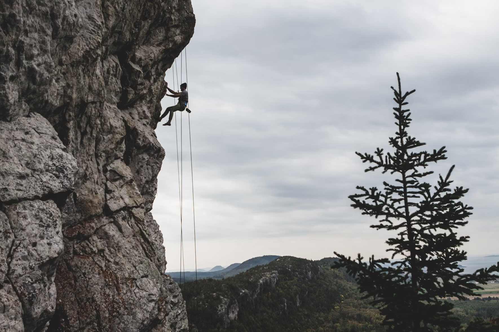
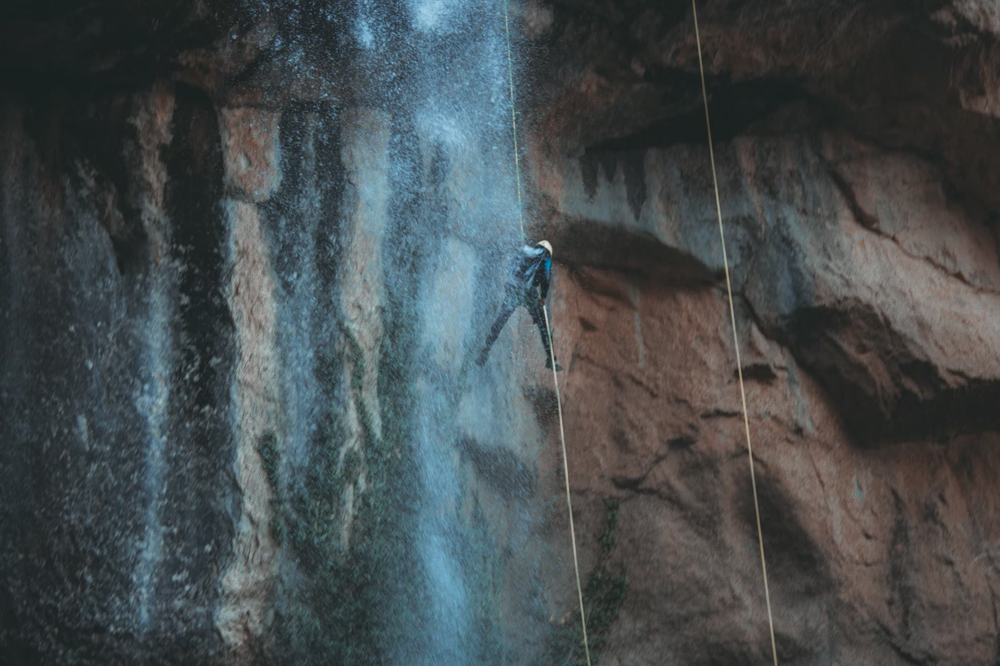

Rope Based Activities
All rope-based activities take place on site with full safety equipment provided.
Climbing
Scale the highs of one of the local quarry slabs.
Max group size 8.
Ages 8+
Abseiling
Take the scary step and abseil from the top of one of the local quarry slabs.
There is a lovely view... if you are brave enough to look down!
Max group size 8.
Ages 8+
Pole Climb
Ever wondered how telephone engineers get to the top of the telephone poles?
Well, here's your chance to find out.
Max group size 8.
Ages 8+